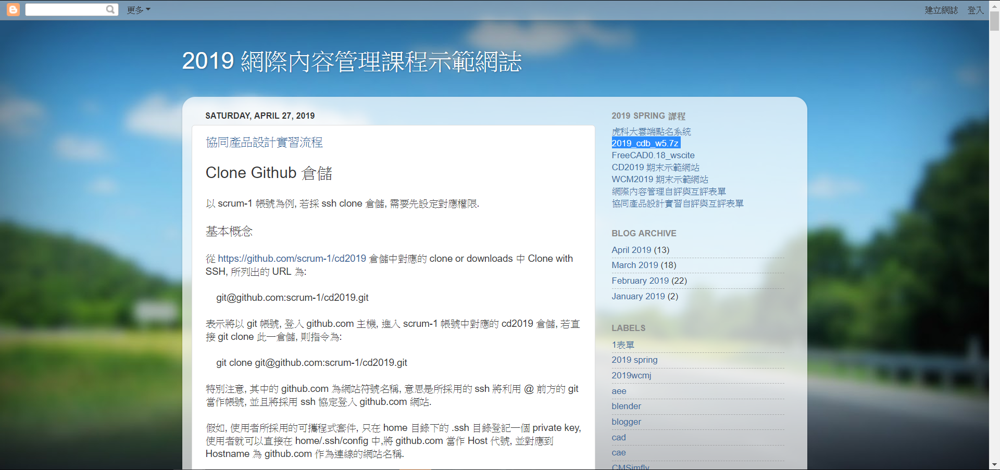

40723102林昱秀
40723103林晏瑩
1.先到mde.tw之網際內容管理網誌點選2019_cdb_w5.7z 下載

2.開始練習指令
D: 去D槽之區域gi
cd 進入資料夾
cd \ or cd .返回根目錄
git init 增加數據庫
git clone下載(後面需增加網址)
git add . 快照，將工作區資料加入索引
git status確認工作目錄與索引狀態
git pull檢查近遠端是否連接
git commit -m "檔案名稱"推送上去之前所包裝之資料夾
git push推送(會問帳號密碼)
git branch查看分支
git merge(分支名稱) 將某分支合併到目前分支，有commit
git rebase(分支名稱) 將目前分支合併到某分支中，不會有commit
git checkout 將開端移動HEAD
git log檢視提交紀錄
git log --oneline --graph --all要求出現開頭的列表
git diff查看上一個資料
git stash移除上一個資料
python --version查看python之版本
git remote 顯示遠端儲存庫
git clean 刪除工作區中未被追蹤的文件